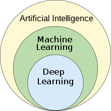
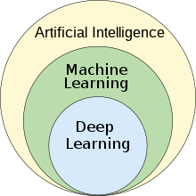
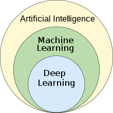

 How Artificial Intelligence Works. AI works by combining large amounts of data with fast, iterative processing and intelligent algorithms, allowing the software to learn automatically from patterns or features in the data. AI systems work by combining large sets of data with intelligent, iterative processing algorithms to learn from patterns and features in the data that they analyze. Each time an AI system runs a round of data processing, it tests and measures its own performance and develops additional expertise.
 4 main types of artificial intelligence Learning in AI can fall under the types “narrow,” “general,” and “super.” These categories demonstrate AI’s capabilities as it evolves—performing narrowly defined sets of tasks, performing the same ability to think like humans (general), and performing beyond human capability. Then, there are four main types of AI as defined by Arend Hintze, researcher and professor of integrative biology at Michigan State University [1]. They are as follows:
1. Reactive machines: Reactive machines are AI systems that have no memory and are task specific, meaning that an input always delivers the same output. Machine learning models tend to be reactive machines because they take customer data, such as purchase or search history, and use it to deliver recommendations to the same customers. This type of AI is reactive. It performs “super” AI, because the average human would not be able to process a customer’s entire Netflix history and feed back customized recommendations. Reactive AI, for the most part, is reliable and works well in inventions like self-driving cars. It doesn’t have the ability to predict future outcomes unless it has been fed the appropriate information. Compare this to our human lives, where most of our actions are not reactive because we don’t have all the information we need to react upon, but we have the capability to remember and learn. Based on those successes or failures, we may act differently in the future if faced with a similar situation. Beat at chess by IBM’s supercomputer: One of the best examples of reactive AI is when Deep Blue, IBM’s chess-playing AI system, beat Garry Kasparov in the late 1990s. Deep Blue could identify their own and their opponents’ pieces on the chessboard to make predictions, but it does not have the memory capacity to use past mistakes to inform future decisions. It only makes predictions based on what moves could be next for both players and selects the best move. Netflix recommendations: Netflix’s recommendation engine is powered by machine learning models that process the data collected from a customer’s viewing history to determine specific movies and TV shows that they will enjoy. Humans are creatures of habit—if someone tends to watch a lot of Korean dramas, Netflix will show a preview of new releases on the home page.
2. Limited memory: The next type of AI in its evolution is limited memory. This algorithm imitates the way our brains’ neurons work together, meaning that it gets smarter as it receives more data to train on. Deep learning improves image recognition and other types of reinforcement learning. Limited memory AI, unlike reactive machines, can look into the past and monitor specific objects or situations over time. Then, these observations are programmed into the AI so that its actions can perform based on both past and present moment data. But in limited memory, this data isn’t saved into the AI’s memory as experience to learn from, the way humans might derive meaning from their successes and failures. The AI improves over time as it’s trained on more data. Self-driving cars: A good example of limited memory AI is the way self-driving cars observe other cars on the road for their speed, direction, and proximity. This information is programmed as the car’s representation of the world, such as knowing traffic lights, signs, curves, and bumps in the road. The data helps the car decide when to change lanes so that it does not get hit or cut off another driver.
3. Theory of mind: The first two types of AI, reactive machines and limited memory, are types that currently exist. Theory of mind and self-awareness are AI types that will be built in the future. As such, there aren’t any real world examples yet. If it is developed, theory of mind AI could have the potential to understand the world and how other entities have thoughts and emotions. In turn, this affects how they behave in relation to those around them. Humans understand how our own thoughts and emotions affect others, and how others’ affect us—this is the basis of our society’s human relationships. In the future, theory of mind AI machines could be able to understand intentions and predict behavior, as if to simulate human relationships.
4. Self-awareness: The grand finale for the evolution of AI would be to design systems that have a sense of self, a conscious understanding of their existence. This type of AI does not exist yet. This goes a step beyond theory of mind AI and understanding emotions, to being aware of themselves, their state of being, and being able to sense or predict others’ feelings. For example, “I’m hungry” becomes “I know I am hungry” or “I want to eat lasagna because it’s my favorite food.” We are a long way from self-aware AI because there is still so much to uncover about the human brain’s intelligence and how memory, learning, and decision-making work.
This is First Simple-Website
created by Gaurav Tiwari
If u want to Go To HomePage then click below
Page 1